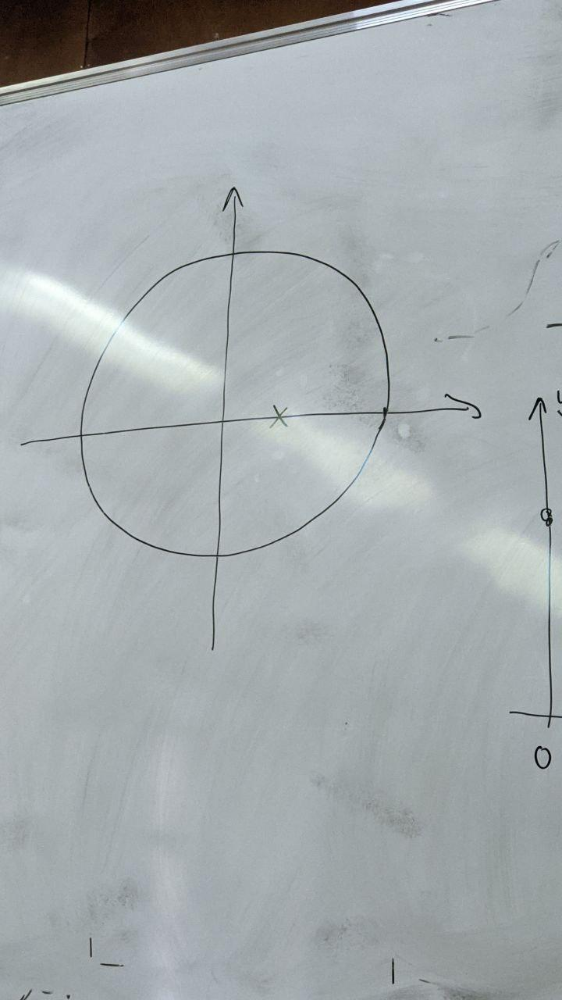
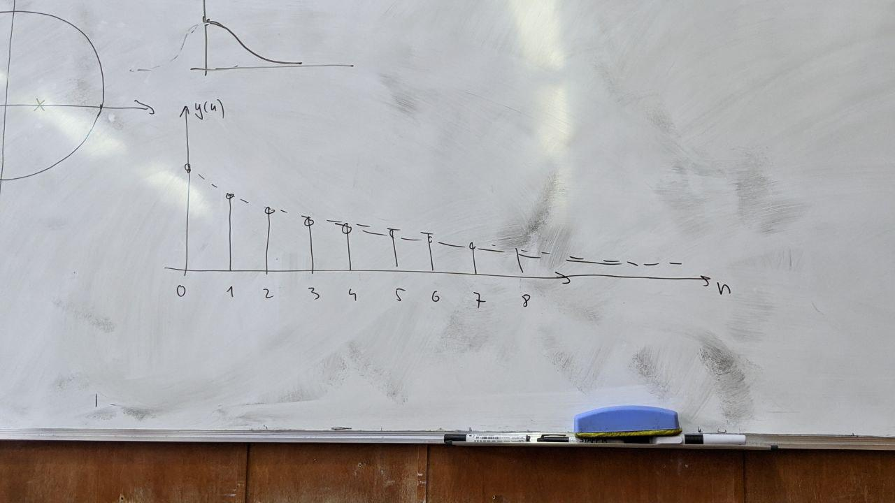
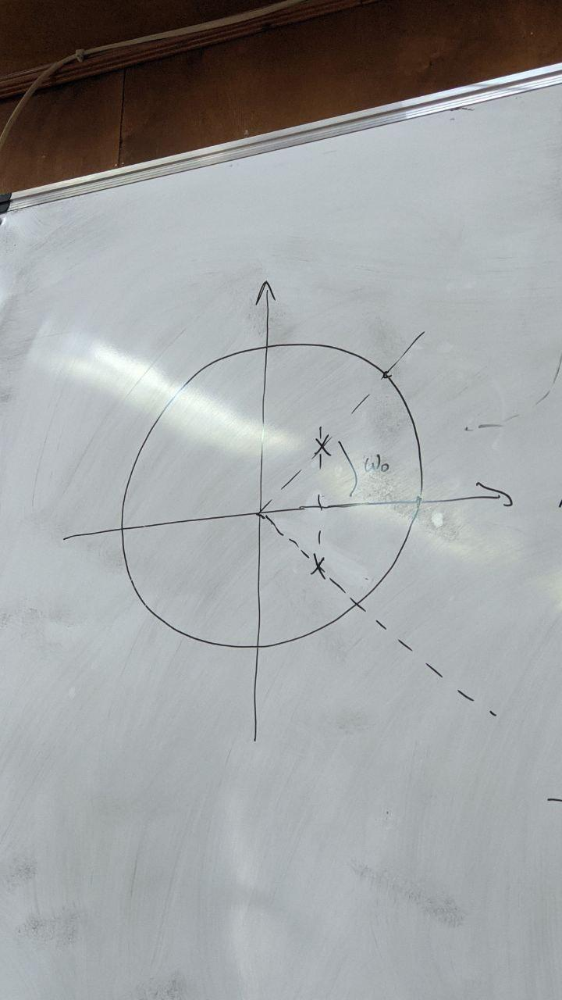
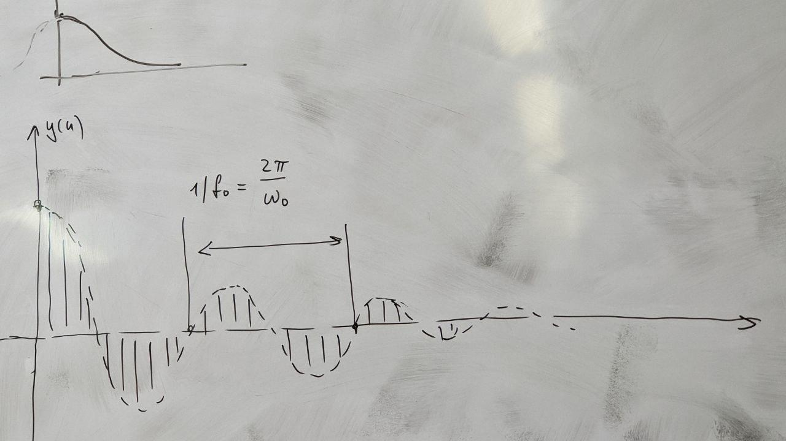
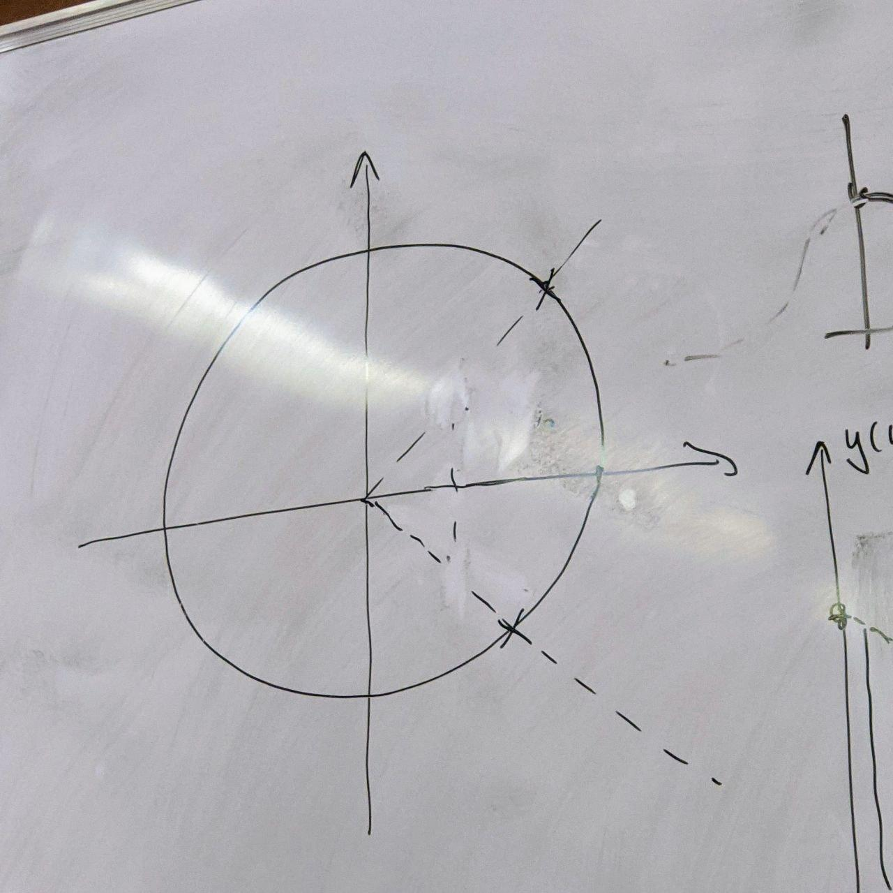
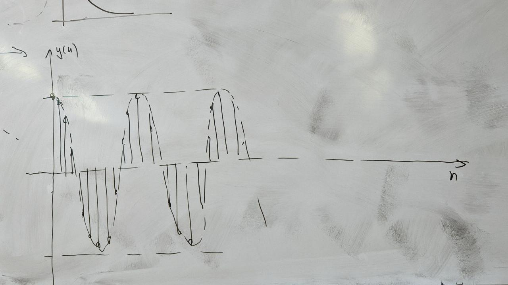
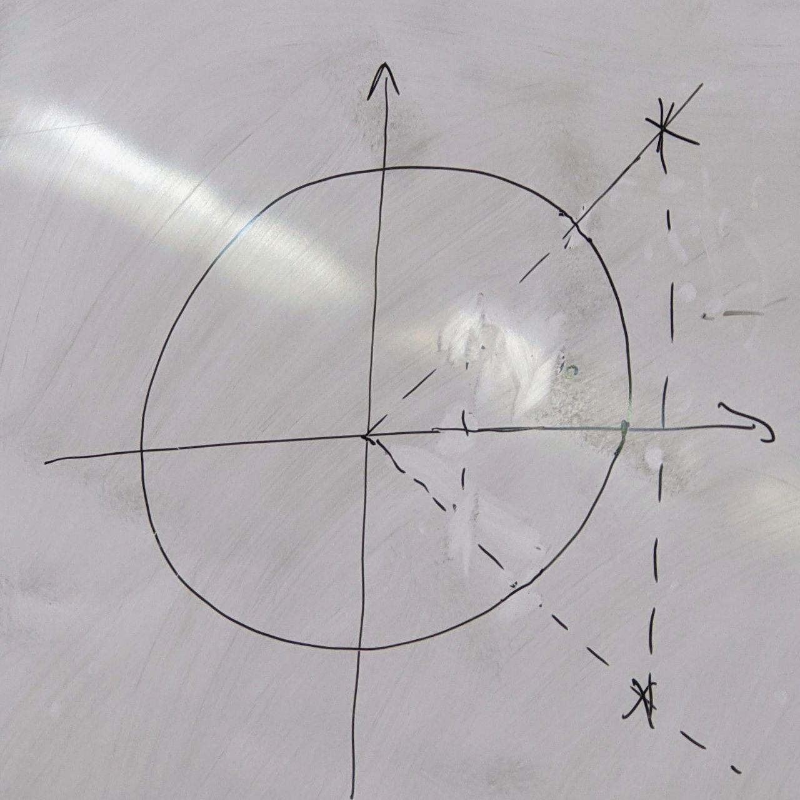
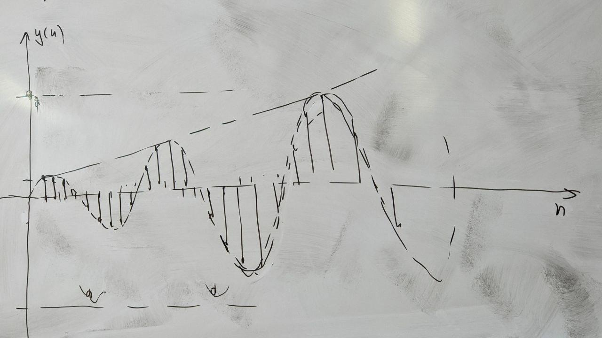
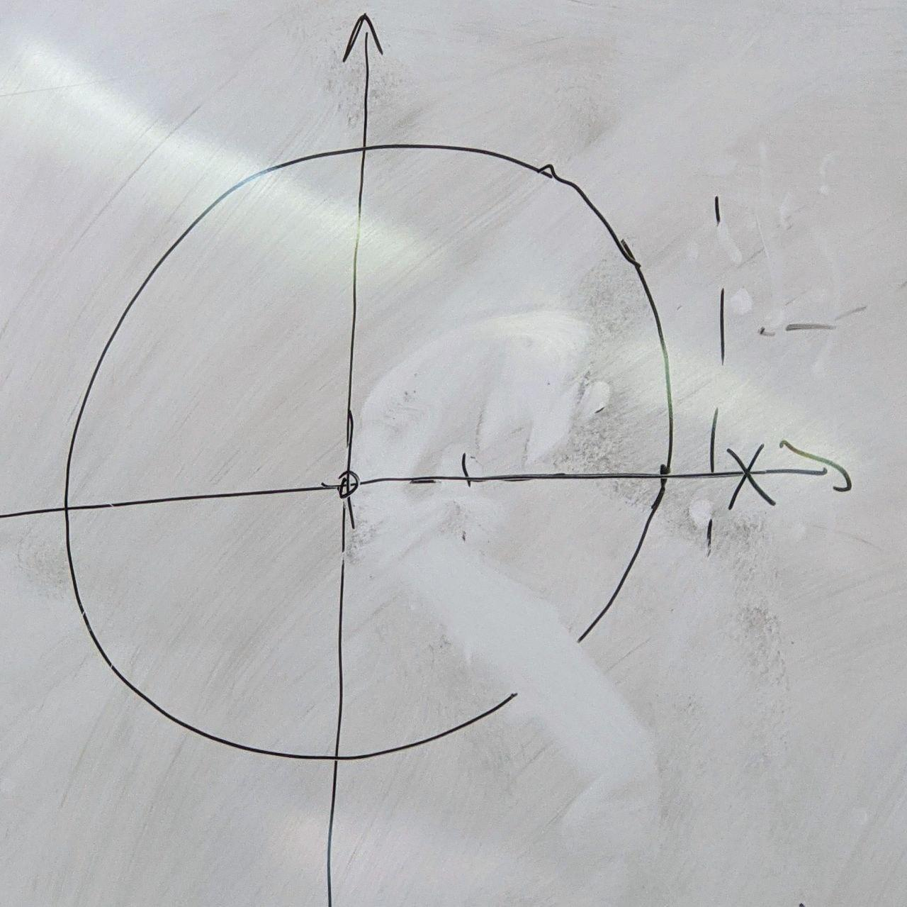
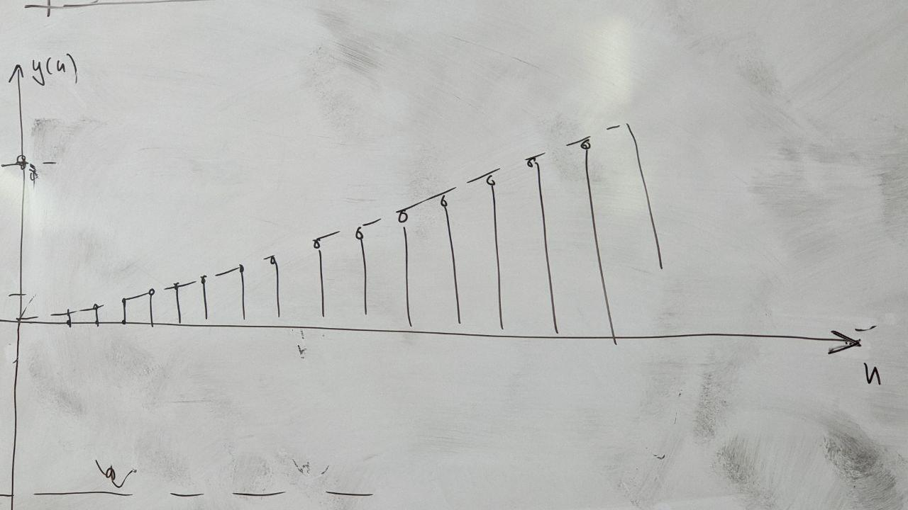

Типовые диаграммы полюсов и нулей
Единственный полюс внутри единичного круга

Вид импульсной хар-ки

2 комплексно-сопряжённых полюса

Вид импульсной хар-ки:

Частота осцилляции пропорциональна углу полюса относительно действительной оси
Сопряжённые полюса на единичной окружности

Вид импульсной хар-ки:

2 сопряжённых полюса вне единичной окружности

Вид импульсной хар-ки:

1 полюс вне единичной окружности

Вид импульсной хар-ки:
